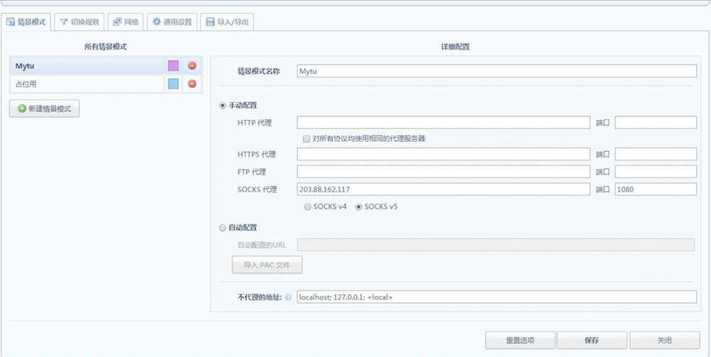
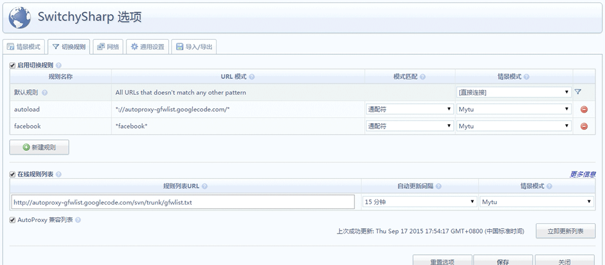
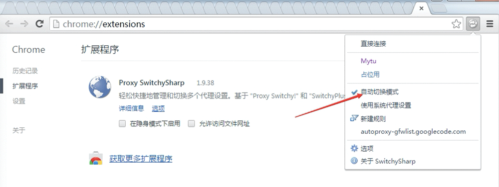

@天兴大人 2015-9
STEP 1
使用Chrome浏览器、安装SwitchSharp插件。在Chome访问：chrome://extensions/ 。将邮件附件拖入浏览器。
STEP 2
新建一个情景模式，默认的不知为何无法添加SOCKS代理
STEP 3
在新建的情景模式中，添加SOCKS代理 IP:203.88.162.117 端口:1080
STEP 4
选择SOCKS v5
STEP 5
新建切换规则：
将自动更新的境外站点获取地址添加入规则，名字随便起。并选择情景模式为之前建立的代理模式。
://autoproxy-gfwlist.googlecode.com/\
其他需访问网站可自定义。并选择情景模式为之前建立的代理模式。 facebook\
勾选在线规则、URL地址为：http://autoproxy-gfwlist.googlecode.com/svn/trunk/gfwlist.txt 。并选择情景模式为之前建立的代理模式。调整更新时间。
点击立即更新、失败了的话、多点几次。
STEP 6
Chome窗口右上角选自动切换代理。访问facebook
配置
参照图片



下载switch sharp